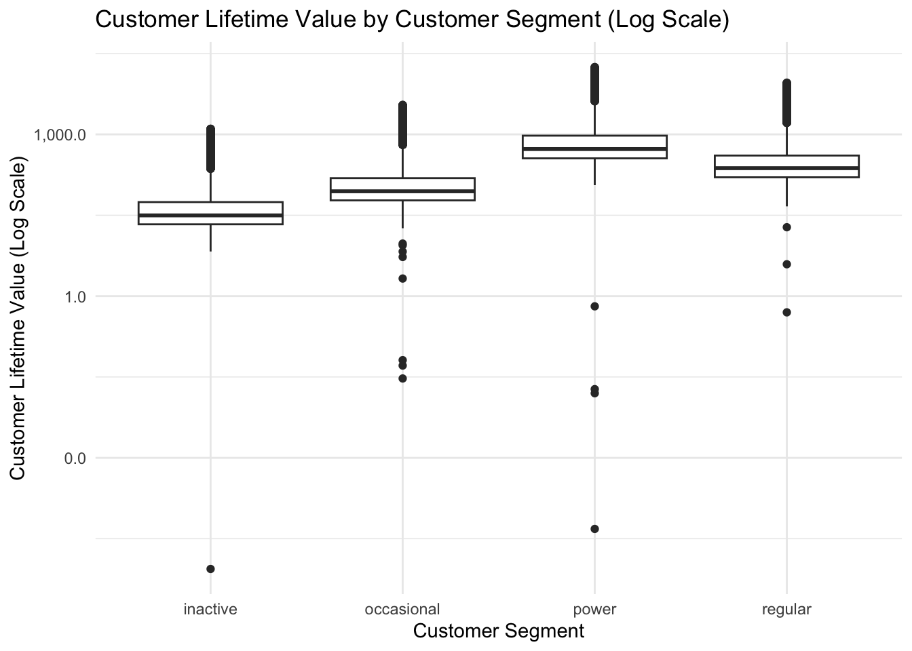
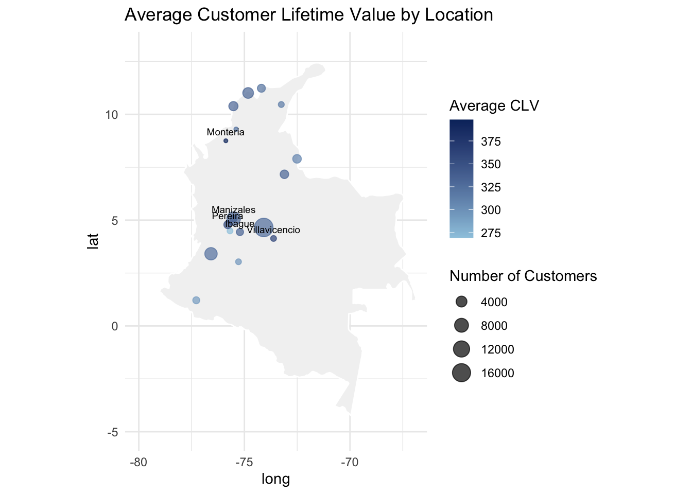
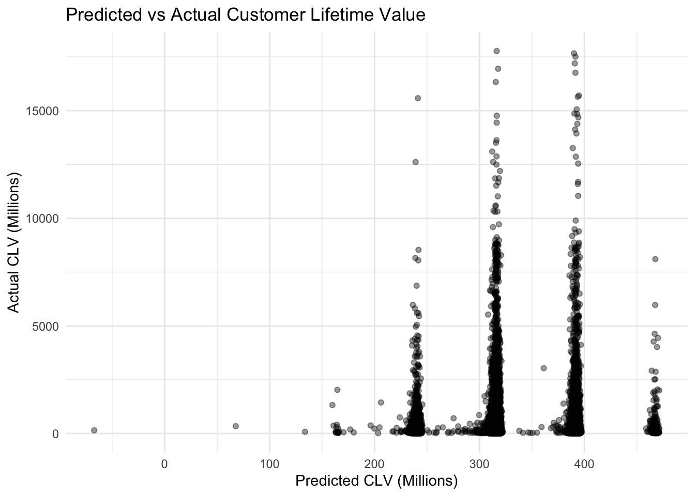

library(tidyverse)
fintech <- read_csv("data/customer_data.csv")Take-Home Exercise 2
1. Introduction
1.1. Project Background
Fintech companies operate in highly competitive digital markets where customer engagement and retention are critical for long-term sustainability. Unlike traditional banks, fintech platforms rely heavily on digital interactions between users and financial services. Understanding how customers interact with these platforms is essential for identifying profitable customer segments and maintaining long-term customer relationships.
1.2. Why Customer Retention Matters?
Any business requires significant marketing and operational costs when it wants to attract new customers. Retaining existing customers proves to be more cost-effective and provide more value for extended periods.
Customers who remain active on a fintech platform tend to perform more financial transactions, adopt multiple financial products, and contribute higher customer lifetime value (CLV). In contrast, customers who show declining engagement or dissatisfaction may be more likely to discontinue their use of the platform.
Identifying customers with high churn risk allows fintech companies to implement specific strategies for retaining those customers. Organizations also need to track which customers produce the most value because this information allows them to distribute resources toward their most profitable customer groups.
1.3. Our Proposal
The project objective is to develop a visual analytics application using R and Shiny for the interactive exploration of fintech customer data.
This tools would allow users to dynamically filter data, explore patterns across multiple dimensions, and find relationships between behavioral indicators and financial outcomes.
It is intended to help analysts compare churn risk across customer groups, examine engagement and profitability, and identify customers at risk of leaving the platform.
2. Proposed Project Storyline
2.1. Project Storyline
The project will deliver an interactive Shiny dashboard consisting of three analytical modules
Module 1 - Customer Overview and Exploratory Analysis
Module 2 - Customer Overview & Segmentation
Module 3 – Exploratory Modelling: Retention Risk & Customer Value
2.2. Role of the Module in the Larger System
This report focuses on Module 3 - Exploratory Modelling: Retention Risk & Customer Value.
While the first two modules provide insights into the whole customer base and how they engagement with fintech services, this module focuses specifically on the customer profitability and retention risk.
By integrating the previously analyzed behavioral indicators, satisfaction metrics, and financial metrics, this exploratory modelling approach allows us to identify the behavioral patterns associated with high-value customers while also detecting early warning signals of potential churn.
These insights could support decision-making for marketing strategies and if executed correctly, improve long-term profitability.
3. Data Preparation Process
3.1. Raw Dataset
The analysis uses the COFINFAD (Colombian Fintech Financial Analytics) dataset, which contains detailed information about fintech customers. The dataset includes demographic information, financial product usage, transaction activity, customer satisfaction indicators, and predicted churn probabilities.
The dataset contains approximately 48,000 customer records and more than 50 variables, providing a comprehensive view of customer behavior within a fintech platform.
3.2. Variable Grouping
Although the dataset contains a wide range of variables, this module primarily focuses on variables related to:
Customer Value Indicators
These variables measure the long-term financial contribution of each customer.
| customer_lifetime_value |
| clv_segment |
| customer_segment |
Retention Risk Indicators
The indicators capture signals related to potential customer churn.
| churn_probability |
| satisfaction_score |
| nps_score |
Transaction & Engagement Behavior Indicators
These metrics indicate how actively a customer is and their engagement with the fintech platform.
| monthly_transaction_count |
| average_transaction_value |
| total_transaction_volume |
| transaction_frequency |
| active_products |
Geographic Variables
These fields allow spatial analysis of CLV and geographic patterns in fintech adoption.
| city |
| department |
| latitude |
| longitude |
Demographic Variables
These information help us identify the customers background and how different groups behave within fintech services.
| gender |
| income_bracket |
| occupation |
| age |
3.3. Data Cleaning
Data preparation involved various steps to ensure the dataset was suitable for analysis:
Verify data types for numerical and categorical variables
sapply(fintech, class)customer_id age "numeric" "numeric" gender city "character" "character" department latitude "character" "numeric" longitude income_bracket "numeric" "character" occupation education_level "character" "character" marital_status household_size "character" "numeric" acquisition_channel customer_segment "character" "character" savings_account credit_card "logical" "logical" personal_loan investment_account "logical" "logical" insurance_product active_products "logical" "numeric" app_logins_frequency feature_usage_diversity "numeric" "numeric" bill_payment_user auto_savings_enabled "logical" "logical" credit_utilization_ratio international_transactions "numeric" "numeric" failed_transactions tx_count "numeric" "numeric" avg_tx_value total_tx_volume "numeric" "numeric" first_tx last_tx "character" "character" base_satisfaction tx_satisfaction "numeric" "numeric" product_satisfaction satisfaction_score "numeric" "numeric" nps_score last_survey_date "numeric" "character" support_tickets_count resolved_tickets_ratio "numeric" "numeric" app_store_rating feedback_sentiment "numeric" "character" feature_requests complaint_topics "character" "character" clv_segment monthly_transaction_count "character" "numeric" average_transaction_value total_transaction_volume "numeric" "numeric" transaction_frequency last_transaction_date "numeric" "character" preferred_transaction_type first_transaction_date "character" "character" weekend_transaction_ratio avg_daily_transactions "numeric" "numeric" customer_tenure churn_probability "numeric" "numeric" customer_lifetime_value "numeric"Check for duplicated customers
fintech %>% filter(duplicated(customer_id))# A tibble: 0 × 57 # ℹ 57 variables: customer_id <dbl>, age <dbl>, gender <chr>, city <chr>, # department <chr>, latitude <dbl>, longitude <dbl>, income_bracket <chr>, # occupation <chr>, education_level <chr>, marital_status <chr>, # household_size <dbl>, acquisition_channel <chr>, customer_segment <chr>, # savings_account <lgl>, credit_card <lgl>, personal_loan <lgl>, # investment_account <lgl>, insurance_product <lgl>, active_products <dbl>, # app_logins_frequency <dbl>, feature_usage_diversity <dbl>, …Identify any missing values in key analytical variables
fintech %>% summarise( missing_clv = sum(is.na(customer_lifetime_value)), missing_churn = sum(is.na(churn_probability)), missing_transactions = sum(is.na(transaction_frequency)) )# A tibble: 1 × 3 missing_clv missing_churn missing_transactions <int> <int> <int> 1 0 0 0Remove incomplete observations where necessary
fintech_clean <- fintech %>% filter( !is.na(customer_lifetime_value), !is.na(churn_probability), !is.na(transaction_frequency) )
nrow(fintech) - nrow(fintech_clean)[1] 0Customer Lifetime Value (CLV) values were rescaled from absolute currency values to millions of Colombian Pesos in order to improve readability and interpretability in visualisations.
fintech_clean <- fintech_clean %>% mutate(clv_millions = customer_lifetime_value / 1000000)Age was grouped into age buckets to facilitate segment comparison and improve interpretability of demographic patterns. This will also help when creating filters for a dynamic dashboard.
library(dplyr) fintech_clean <- fintech_clean %>% mutate( age_bucket = cut( age, breaks = c(18, 25, 35, 45, 55, 65, Inf), labels = c("18–25", "26–35", "36–45", "46–55", "56–65", "65+"), right = TRUE ) )
3.4. Evaluation of R Packages
For the development of the prototype module and the visual analytics components, several R packages are required to support data manipulation, visualization, and formatting of analytical outputs.
The main packages used in this project include:
| Package |
|---|
| tidyverse |
| ggplot2 |
| dplyr |
| scales |
All these packages are hosted and maintained on CRAN, ensuring compatibility with the R environment and allowing them to be installed easily.
To verify that these packages are available in CRAN, the following command can be used in R:
packages <- c("tidyverse","ggplot2","dplyr","scales")
sapply(packages, requireNamespace, quietly = TRUE)tidyverse ggplot2 dplyr scales
TRUE TRUE TRUE TRUE To verify that these packages are available in CRAN, the following command can be used in R:
4. Selection of Visualization Techniques
The visualizations selected for this module are designed to examine the relationship between CLV, churn probability and customer engagement behavior. The charts were chosen to support a comparison across segments and a relationship analysis between continuous variables.
The following visualizations are proposed for the prototype:
4.1. CLV Distribution by Customer Segment
A boxplot is used to compare the distribution of customer lifetime value across customer segments. Because CLV values are highly skewed, a logarithmic scale is used to improve readability.
Fields used:
customer_segment
customer_lifetime_value
This visualization helps identify which segments generate the highest financial value.
4.2. Churn Probability by Segment
A bar chart compares average churn probability across customer segments.
Fields used:
customer_segment
churn_probability
This graph highlights which customer groups exhibit higher retention risk.
4.3. Engagement Behavior vs Customer Value
A scatter plot examines the relationship between transaction frequency and customer lifetime value.
Fields used:
transaction_frequency
customer_lifetime_value
customer_segment
This chart helps determine whether highly engaged customers generate higher financial value.
4.4. Geographic Distribution of Customer Value
A geospatial map visualizes the distribution of average customer lifetime value across geographic locations.
Fields used:
latitude
longitude
customer_lifetime_value
This map reveals geographic patterns in fintech customer value.
4.5. Predicted vs Actual Customer Lifetime Value
A scatter plot comparing predicted and actual CLV values is included.
Fields used:
customer_lifetime_value
transaction_frequency
active_products
average_transaction_value
satisfaction_score
nps_score
This illustrates the relationship between the CLV values predicted by the regression model and the observed CLV in the dataset.
5. Visualization Design and Interaction Principles
Several visual design principles were applied to ensure effective visual analytics.
Readability
Visualizations use clear axis labels, minimal visual clutter, and appropriate scaling to ensure readability.
Comparison Across Segments
Charts will allow comparison across customer segments and groups to highlight meaningful differences in engagement and value.
Progressive Drill-Down
In the proposed dashboard, users will be able to interactively filter the dataset to explore specific segments and behavioral patterns in greater detail.
Coordinated Views
Multiple visualizations are designed to work together, enabling users to analyse relationships between engagement, customer value, and retention risk.
Color and Label Choices
Consistent color schemes will be used across visualizations to represent customer segments and ensure consistency.
6. Proposed UI Design
The proposed user interface will be implemented as an interactive Shiny dashboard that allows users to dynamically explore customer retention risk and customer lifetime value through multiple coordinated visualizations.
The dashboard is designed to supportexploration of customer behavior and value. Users will begin by selecting demographic filters to define a specific customer group of interest. Once filters are applied, the visualizations will update automatically to display patterns related to CLV, churn risk, and engagement.
6.1. Sketch

6.3. Main panel
It will display the visual analytics outputs of the module. These outputs include the key visualizations developed in this prototype (more details in section 4)
6.4. Input-output mapping
The demographic filters in the sidebar will serve as inputs, which dynamically filter the dataset used by each visualisation. The filtered dataset will then be passed to the output components, which generate the charts and visualizations displayed in the main panel.
7. Prototype Visualization
7.1. CLV Distribution by Customer Segment
library(ggplot2)
library(dplyr)
library(scales)
ggplot(fintech_clean, aes(x = customer_segment, y = clv_millions)) +
geom_boxplot() +
scale_y_log10(labels = comma) +
labs(
title = "Customer Lifetime Value by Customer Segment (Log Scale)",
x = "Customer Segment",
y = "Customer Lifetime Value (Log Scale)"
) +
theme_minimal()
7.2. Churn Probability by Segment
library(ggplot2)
library(dplyr)
library(scales)
churn_by_segment <- fintech_clean %>%
group_by(customer_segment) %>%
summarise(avg_churn = mean(churn_probability, na.rm = TRUE))
ggplot(churn_by_segment, aes(x = customer_segment, y = avg_churn, fill = avg_churn)) +
geom_col() +
geom_text(
aes(label = label_percent(accuracy = 0.1)(avg_churn)),
vjust = -0.5
) +
scale_fill_gradient(
low = "lightblue",
high = "darkblue",
guide = "none"
) +
scale_y_continuous(
labels = label_percent(),
breaks = seq(0.30, 0.35, 0.01)
) +
coord_cartesian(ylim = c(0.30, 0.35)) +
labs(
title = "Average Churn Probability by Customer Segment",
x = "Customer Segment",
y = "Average Churn Probability"
) +
theme_minimal()
7.3. Engagement Behavior vs Customer Value
x_limit <- quantile(fintech_clean$transaction_frequency, 0.95)
y_limit <- quantile(fintech_clean$clv_millions, 0.95)
ggplot(fintech_clean, aes(x = transaction_frequency, y = clv_millions, color = customer_segment)) +
geom_point(alpha = 0.5) +
scale_y_continuous(labels = comma) +
coord_cartesian(xlim = c(0, x_limit), ylim = c(0, y_limit)) +
labs(
title = "Transaction Frequency vs Customer Lifetime Value",
x = "Transaction Frequency",
y = "Customer Lifetime Value",
color = "Customer Segment"
) +
theme_minimal()
7.4. Geographic Distribution of Customer Value
First, we aggregate customers by city and calculates the average CLV and number of customers.
clv_location <- fintech_clean %>%
group_by(city, department, latitude, longitude) %>%
summarise(
avg_clv = mean(clv_millions, na.rm = TRUE),
customers = n(),
.groups = "drop"
) %>%
mutate(label = city)We identify Identify the Top 5 cities by average CLV
top_cities <- clv_location %>%
slice_max(avg_clv, n = 5)We map it
colombia_map <- map_data("world", region = "Colombia")ggplot() +
geom_polygon(
data = colombia_map,
aes(x = long, y = lat, group = group),
fill = "gray95",
color = "white"
) +
geom_point(
data = clv_location,
aes(x = longitude, y = latitude,
color = avg_clv,
size = customers),
alpha = 0.7
) +
geom_text(
data = top_cities,
aes(x = longitude, y = latitude, label = label),
size = 2.5,
vjust = -0.8
) +
scale_color_gradient(
low = "#9ecae1",
high = "#08306b",
labels = scales::comma
) +
coord_quickmap(
xlim = c(-80, -67),
ylim = c(-5, 13)
) +
labs(
title = "Average Customer Lifetime Value by Location",
color = "Average CLV",
size = "Number of Customers"
) +
theme_minimal()
7.5. Predicted vs Actual Customer Lifetime Value
Linear Regression for CLV
clv_model <- lm(
clv_millions ~
transaction_frequency +
active_products +
average_transaction_value +
satisfaction_score +
nps_score,
data = fintech_clean
)
summary(clv_model)
Call:
lm(formula = clv_millions ~ transaction_frequency + active_products +
average_transaction_value + satisfaction_score + nps_score,
data = fintech_clean)
Residuals:
Min 1Q Median 3Q Max
-457.3 -266.6 -189.4 -25.9 17452.2
Coefficients:
Estimate Std. Error t value Pr(>|t|)
(Intercept) 3.385e+01 8.285e+01 0.409 0.683
transaction_frequency -1.758e+00 2.104e+00 -0.835 0.404
active_products 7.926e-01 3.043e+00 0.260 0.795
average_transaction_value -3.189e-07 9.056e-07 -0.352 0.725
satisfaction_score 7.189e+01 1.551e+01 4.634 3.6e-06 ***
nps_score 1.909e-01 7.144e-01 0.267 0.789
---
Signif. codes: 0 '***' 0.001 '**' 0.01 '*' 0.05 '.' 0.1 ' ' 1
Residual standard error: 791.4 on 48717 degrees of freedom
Multiple R-squared: 0.003074, Adjusted R-squared: 0.002971
F-statistic: 30.04 on 5 and 48717 DF, p-value: < 2.2e-16Visualization of Model Results
fintech_clean$predicted_clv <- predict(clv_model)
ggplot(fintech_clean, aes(x = predicted_clv, y = clv_millions)) +
geom_point(alpha = 0.4) +
labs(
title = "Predicted vs Actual Customer Lifetime Value",
x = "Predicted CLV (Millions)",
y = "Actual CLV (Millions)"
) +
theme_minimal()
8. Conclusion
The Retention Risk & Customer Value module provides valuable insights into how customer engagement influence long-term profitability within the fintech platform. By analyzing key indicators, this module helps identifying high-value customers and segments that may be at risk of disengagement.
Overall, the prototype developed in this module demonstrates how data exploration can support data-driven decision making across multiple business functions. The proposed Shiny application could provide a powerful tool for fintech organizations seeking to optimize customer strategy and maximize business value in the long run.